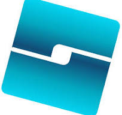
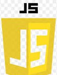
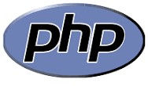

Jl. Ketintang, Ketintang, Kec. Gayungan, Surabaya, Jawa Timur 60231
. Minat di bidang pemrograman muncul sejak saya mengikuti program unggulan yang disediakan di Marasah Aliyah Zainul Hasan 1 Genggong, Probolinggo, madrasah berbasis pesantren dan teknologi. Saya berangkat dari ketidaktahuan sama sekali. Membuka wawasan baru mengenal beberapa bahasa pemrograman, hingga menghasilkan project digital dan melanjutkan studi sebagai mahasiswa Teknik Informatika UNESA.
Menurut saya, Informatika adalah gambaran hidup. Setiap baris code mencerminkan perjalanan suka dan duka. Setiap error adalah duka yang membawa kerendahan hati, namun bukan untuk menyerah lalu berhenti. Melainkan tantangan untuk bangkit debuging dengan percaya diri. Informatika adalah patriotisme, mengorbankan pikiran menghadapi kerumitan demi kemudahan user melalui projectnya. Sebagaimana perjuangan hingga running berhasil, percayalah bahwa setiap usaha dan kebaikan akan menghasilkan kebaikan pula.
Saya menyadari bahwa pemrograman tidak mudah. Namun hal itulah yang menjadikan saya sebagai celah kesempatan untuk terus menggali potensi. Saya berusaha menyerap materi yang disampaikan para guru, serta sebisa mungkin mengikuti beberapa pelatihan online, seperti dicoding, coding studio, w3school, codewars, dan sebagainya. Setiap baris kode adalah perjalanan membangun karakter programmer yang professional, dengan tujuan hal ini diimplementasikan dalam bentuk karya digital yang bermanfaat.
Sejak kelas 8, saya mengikuti program Tahfiz Al-Quran di Pesantren Zainul Hasan Genggong. Berikut dokumentasi foto dan sertifikat. klik bagian konten untuk melihat lebih jelas.

Dihitung dari pendapatan selama 1 tahun

Uji Publik wisuda tahfiz 9 juz
Pondok Putri Pusat Pesantren Zainul Hasan Genggong

Pondok Putri Pusat Pesantren Zainul Hasan Genggong

Perolehan nilai Mumtaz pada ujian Tasmi' Al-Quran
PRODISTIK (Program Terapan Bidang TIK) merupakan salah satu program unggulan yang saya ikuti di MA Zainul Hasan 1 Genggong. Program ini bekerja sama dengan Fakultas Ilmu Pendidikan UM. Bertujuan meningkatkan kemampuan para santri di bidang teknologi. Program ini dibagi menjadi 3 jurusan, dan saya memilih untuk berada di jurusan programming. Berikut materi yang dipelajari selama PRODISTIK.
| Logo | Materi | Kemampuan |
|---|---|---|
| Microsoft Word | Lanjutan | |
| Microsoft Excel | Menengah | |
 |
Power Point | Lanjutan |
 |
Corel Draw | Lanjutan |
| Google SketchUp | Dasar | |
|  | Roblox Studio | Dasar |
| HTML | Lanjutan | |
| CSS | Menengah | |
|  | Java Script | Dasar |
| Python | Dasar | |
| Database MySQL | Menengah | |
|  | PHP | Lanjutan |
| C++ | Dasar | |
| Bootstrap CSS | Menengah | |
| Laravel PHP | Lanjutan | |
| Github | Menengah | |
| Figma UI | Dasar | |
| Tailwind CSS | Dasar |
OSN, KSM, TIMO, KMNR, PHI UNISMA, LSM UNY, OLMAT UINSA, LIMAS, EMC DBS Foundation.
SelengkapnyaOSN-K Informatika dan Cite Up Competitif Programming Python Universitas Pertamina
SelengkapnyaPhysic Competition (PHYSTON) oleh Jurusan Fisika Fakultas MIPA Universitas Negeri Jember.
Selengkapnya
Saya mendaftar dan dipilih sebagai pengurus OSIS pada masa bhakti 2022/2023 sebagai Anggota Divisi Jurnalistik dan CO Jurnalistik pada masa bhakti 2023/2024. Berikut dokumentasi foto dan sertifikat. Klik bagian konten untuk melihat lebih jelas.

Sambutan pada acara diklat Kepenulisan Buku

Output yang dihasilkan peserta diklat berupa antologi cerpen

Turut serta menulis karangan cerpen bersama peserta diklat

Pemberian penghargaan oleh Kepala Madrasah Nun Ahsan Maliki, S.Sy. M.Pd
Rapat kerja OSIS divisi jurnalistik

Publikasi kegiatan OSIS MA ZAHA 1